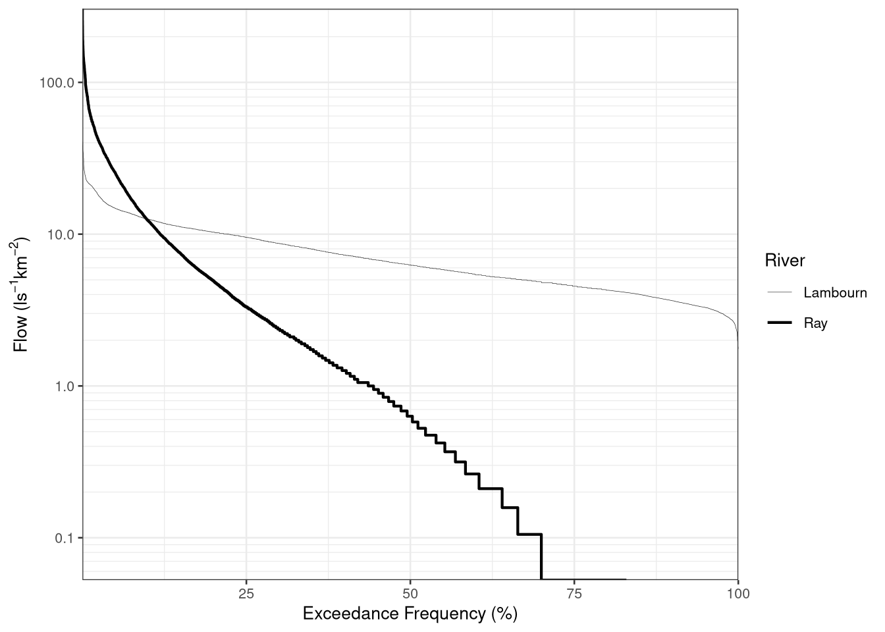
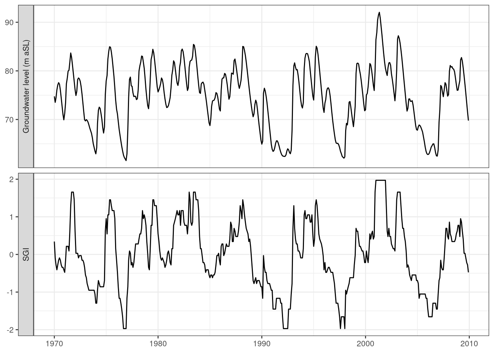
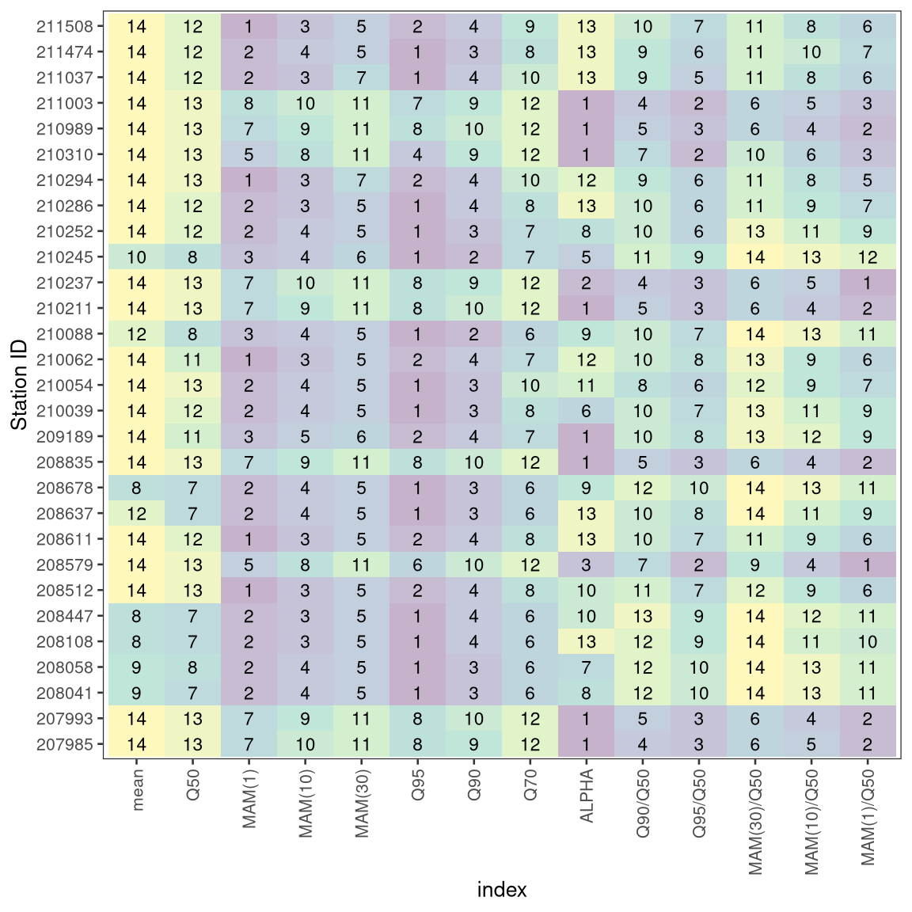
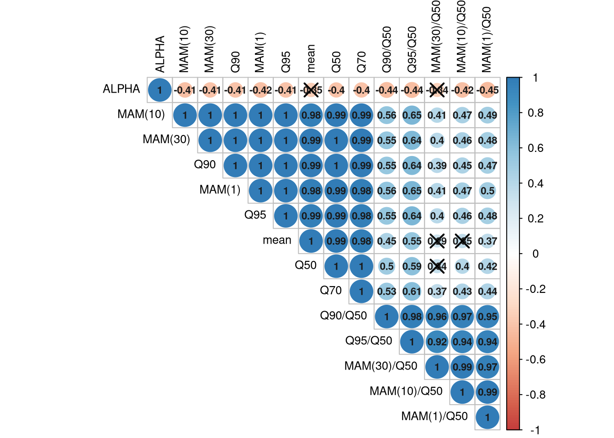
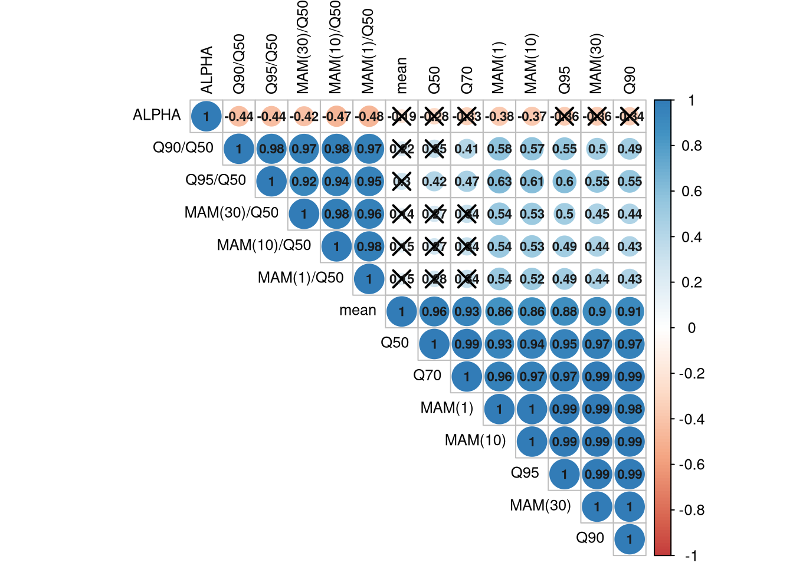
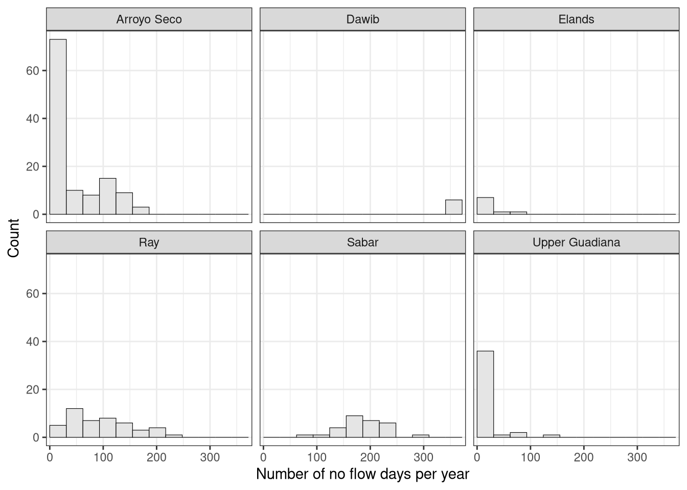
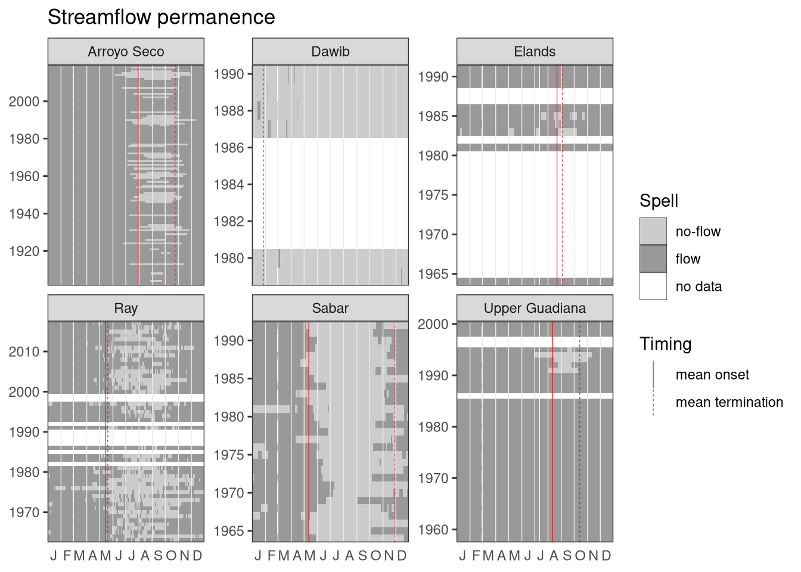

1 Chapter 5
1.1 Worked Example 5.1: Flow Duration Curve
1.1.1 Loading the Data
In this example we are going to use river flow data from the river Ngaruroro which is part of the International Data Set in the package hydroDrought. The dataset becomes accessible by loading the hydroDrought package.
library(tidyverse)
library(hydroDrought)
ngaruroro <- international %>%
filter(river == "Ngaruroro") %>%
dplyr::select(data) %>%
unnest(data) The complete record (20 September 1963 to 8 October 2019) of daily data from River Ngaruroro at Kuripapango (NZ) are used here to construct a flow duration curve (FDC) based on a daily time step, \(\Delta t = 1\) day. The total number of \(\Delta t\) intervals is \(N = 20473\) days. Table 5.1 lists the first ten flow values. The first three columns show the date and the corresponding riverflow value, \(Q\).
1.1.2 Calculation of the FDC
The flow duration curve is constructed following the calculation steps as seen in the right part of the Table 5.1:
The rank, \(i\), of each value (column four in Table 5.1) is calculated (using the
rank()function), which means that if the list is sorted, the rank will be its position. Here the series is sorted in descending order and the \(i^{th}\) largest value has rank \(i\) (i.e. the largest value has rank 1).The exceedance frequency (column five in Table 5.1), \(EF_{Q_i}\) is calculated as: \[EF_{Q_i} = \frac{i} {N}\] which gives an estimate of the empirical exceedance frequency of the \(i^{th}\) largest event. \(EF_{Q_i}\) designates here the observed frequency when the flow, \(Q\), is larger than the flow value with rank \(i\), \(Q_i\) .
exceedance_frequency <- function(flow)
{
# current rank
i <- rank(-flow, ties.method = "min", na.last = "keep")
# largest rank in sample (= number of non-missing values)
N <- length(na.omit(flow))
# the exceedance frequency can be seen as the relative rank
return(i / N)
}
ngaruroro <- ngaruroro %>%
mutate(
rank = rank(-discharge, ties.method = "min"),
freq.exc = exceedance_frequency(discharge)
) Table 5.1 Calculation of daily flow duration curve for River Ngaruroro at Kuripapango, NZ
## # A tibble: 7 x 4
## time discharge rank freq.exc
## <date> <dbl> <int> <dbl>
## 1 1963-09-20 30.5 2501 0.124
## 2 1963-09-21 52.8 827 0.0409
## 3 1963-09-22 43.6 1228 0.0607
## 4 1963-09-23 37.3 1686 0.0834
## 5 1963-09-24 32.3 2240 0.111
## 6 1963-09-25 29.0 2736 0.135
## 7 1963-09-26 25.3 3482 0.1721.1.3 Plot of the FDC
The sorted table columns are then plotted (Figure 5.2). The ordinate axis is here logarithmic.
ggplot(ngaruroro, aes(x = freq.exc * 100, y = discharge)) +
geom_line() +
scale_y_log10(expand = expansion()) +
scale_x_continuous(expand = expansion()) +
labs(x = "Exceedance Frequency (%)",
y = expression(paste("Flow (", m^{3}, s^{-1}, ")"))) +
theme(plot.margin = unit(c(0, 10, 0, 0), units = "pt"))Figure 1.1: Figure 5.2 Flow duration curve for River Ngaruroro at Kuripapango, NZ.
1.1.4 Selected exceedance values
Values for a particular frequency, for example the 90-percentile (\(Q_{90}\)), can be obtained as the value of \(Q\) corresponding to the largest value of \(EF_{Q_i}\) that is less than or equal to the value of \(EF_{Q_i}\) sought for. A sample of corresponding values in this range is shown in Table 5.2, and the 90-percentile flow value is taken as 4.9 m3s-1. Alternatively, in case of large differences between successive values, a linear interpolation can be used.
Table 5.2 An extract of values corresponding to \(Q_{90}\).
## # A tibble: 9 x 4
## time discharge rank freq.exc
## <date> <dbl> <int> <dbl>
## 1 2001-03-03 4.94 18202 0.900
## 2 1999-01-16 4.94 18203 0.900
## 3 2005-11-24 4.94 18203 0.900
## 4 2013-01-18 4.94 18203 0.900
## 5 1990-12-29 4.93 18206 0.900
## 6 1968-02-17 4.93 18207 0.900
## 7 1994-03-28 4.93 18207 0.900
## 8 1998-03-29 4.93 18207 0.900
## 9 2002-03-26 4.93 18207 0.9001.1.5 Fast-Track
The function lfquantile() calculates percentiles (quantiles) directly. The
exact (interpolated) values for \(Q_{95}\), \(Q_{90}\) and \(Q_{80}\) would be:
lfquantile(ngaruroro$discharge, exc.freq = c(0.95, 0.9, 0.8))## Q95 Q90 Q80
## 4.10925 4.93600 6.46200The retrieved value for \(Q_{90}\) is 4.936 m3s-1, approximated to 4.94 m3s-1.
1.1.6 Standardized Flow Duration Curves
Comparing FDCs from different catchments requires standardization eg. dividing the discharges by the catchment area, the median or the mean discharge.
lambournRay <- international %>%
filter(river %in% c("Lambourn", "Ray")) %>%
dplyr::select(river, area = catchment, data)
lambournRay <- lambournRay %>%
mutate(
data = map2(data, area, ~mutate(.x, rel.discharge = discharge * 1000 / .y))
) %>%
print()## # A tibble: 2 x 3
## river area data
## <chr> <dbl> <list>
## 1 Ray 19 <tibble [20,454 × 3]>
## 2 Lambourn 234 <tibble [20,973 × 3]>fdc <- lambournRay %>%
dplyr::select(river, data) %>%
unnest(cols = data) %>%
group_by(river) %>%
mutate(
freq.exc = exceedance_frequency(rel.discharge)
) ggplot(fdc,
mapping = aes(x = freq.exc * 100, y = rel.discharge, size = river)) +
geom_step(direction = "vh") +
scale_x_continuous(expand = expansion()) +
scale_y_log10(breaks = breaks_log10_all(mult.base = 1),
minor_breaks = breaks_log10_all(),
expand = expansion()) +
scale_size_manual("River", values = c(0.1, 0.75)) +
labs(x = "Exceedance Frequency (%)",
y = expression(paste("Flow (", l, s^{-1}, km^{-2}, ")"))) 
1.2 Worked example 5.2: Mean annual minimum n-day flow
1.2.1 Loading the Data
In this example we are again going to use river flow data from the river Ngaruroro at Kuripapango (NZ) of the International Data Set in the package hydroDrought. Ten years of daily data are used as an example, as in Worked Example 5.1, to estimate mean annual minimum of the \(n\)-day average flow for \(n\) equal to 1, 7 and 30 days. For this station the lowest flows are observed around the turn of the calendar year. Therefore the annual minima are selected from years starting 1 September and ending 31 August. Table 5.4 lists the first flow values. The first two columns show the date and the corresponding flow value, \(Q\).
In order to calculate the mean annual minimum each observation will be attributed
to a year according to the date of the observation using the function water_year()
which appends an additional column named year to the dataset.
library(tidyverse)
library(hydroDrought)
# attribute each observation to the correct year
# and dplyr::select only the years between 1990/91 and 2000/01
ngaruroro <- international %>%
filter(river == "Ngaruroro") %>%
dplyr::select(data) %>%
unnest(data) %>%
mutate(
year = water_year(time, origin = "-09-01")
) %>%
filter(year >= 1990, year <= 1999)
smoothed <- ngaruroro %>%
mutate(
MA1 = moving_average(discharge, n = 1),
MA7 = moving_average(discharge, n = 7),
MA30 = moving_average(discharge, n = 30)
)Table 5.4 Calculation of \(n\)-day average flow (unit: in m3s-1), River Ngaruroro at Kuripapango, NZ. A moving average with a window length \(n\) introduces \(n-1\) missing values (NA values).
## # A tibble: 31 x 6
## time discharge year MA1 MA7 MA30
## <date> <dbl> <dbl> <dbl> <dbl> <dbl>
## 1 1990-09-01 19.5 1990 19.5 NA NA
## 2 1990-09-02 17.9 1990 17.9 NA NA
## 3 1990-09-03 16.7 1990 16.7 NA NA
## 4 1990-09-04 17.5 1990 17.5 NA NA
## 5 1990-09-05 21.2 1990 21.2 NA NA
## 6 1990-09-06 30.8 1990 30.8 NA NA
## 7 1990-09-07 24.5 1990 24.5 21.1 NA
## 8 1990-09-08 20.7 1990 20.7 21.3 NA
## 9 1990-09-09 18.7 1990 18.7 21.4 NA
## 10 1990-09-10 16.9 1990 16.9 21.5 NA
## 11 1990-09-11 15.7 1990 15.7 21.2 NA
## 12 1990-09-12 14.6 1990 14.6 20.3 NA
## 13 1990-09-13 13.6 1990 13.6 17.8 NA
## 14 1990-09-14 12.8 1990 12.8 16.1 NA
## 15 1990-09-15 12.0 1990 12.0 14.9 NA
## 16 1990-09-16 11.3 1990 11.3 13.9 NA
## 17 1990-09-17 10.7 1990 10.7 13.0 NA
## 18 1990-09-18 10.2 1990 10.2 12.2 NA
## 19 1990-09-19 9.66 1990 9.66 11.5 NA
## 20 1990-09-20 9.22 1990 9.22 10.8 NA
## 21 1990-09-21 8.82 1990 8.82 10.3 NA
## 22 1990-09-22 8.54 1990 8.54 9.77 NA
## 23 1990-09-23 8.31 1990 8.31 9.34 NA
## 24 1990-09-24 8.14 1990 8.14 8.98 NA
## 25 1990-09-25 8.12 1990 8.12 8.69 NA
## 26 1990-09-26 8.05 1990 8.05 8.46 NA
## 27 1990-09-27 7.62 1990 7.62 8.23 NA
## 28 1990-09-28 7.42 1990 7.42 8.03 NA
## 29 1990-09-29 7.34 1990 7.34 7.86 NA
## 30 1990-09-30 8.67 1990 8.67 7.91 13.5
## 31 1990-10-01 17.4 1990 17.4 9.24 13.41.2.2 Calculation
First the annual minimum values are extracted and then the mean annual minimum values, \(MAM(1)\), \(MAM(7)\) and \(MAM(30)\) are calculated by averaging the annual minimum time series. The results are tabulated in Table 5.5.
# compute the annual minima
am <- smoothed %>%
dplyr::select(-discharge, -time) %>%
group_by(year) %>%
summarise_all(min, na.rm = TRUE)
# average the annual minima to get the mean annual minima
mam <- am %>%
dplyr::select(-year) %>%
summarise_all(mean) Table 5.5 \(MAM(n-day)\), \(n=1\) day, 7 days and 30 days (m3s-1).
## # A tibble: 1 x 3
## MA1 MA7 MA30
## <dbl> <dbl> <dbl>
## 1 4.13 4.39 5.431.2.3 Fast Track
Mapping over the length of the smoothing window avoids the multiple explicit
calls of the function mean_annual_minimum(). The results are absolutely
identical but the code is can be adapted more easily and is less error-prone.
# calculating each column explicitly
ngaruroro %>%
dplyr::select(discharge, time) %>%
summarise(
`MAM(1)` = mean_annual_minimum(discharge, time, origin = "-09-01", n = 1),
`MAM(7)` = mean_annual_minimum(discharge, time, origin = "-09-01", n = 7),
`MAM(30)` = mean_annual_minimum(discharge, time, origin = "-09-01", n = 30)
) %>%
flatten_dbl()## MAM(1) MAM(7) MAM(30)
## 4.130100 4.385514 5.430773# Applying the function mean_annual_minimum() to each element of the vector
c(1, 7, 30) %>%
map(
.f = mean_annual_minimum,
discharge = ngaruroro$discharge, time = ngaruroro$time, origin = "-09-01"
) %>%
flatten_dbl()## MAM(1) MAM(7) MAM(30)
## 4.130100 4.385514 5.4307731.3 Worked Example 5.3: Base Flow Index
1.3.1 Loading the Data
Three years of daily flow (1995 to 1997) from the Ray at Grendon Underwood (UK) have been selected. The base flow separation is done for the whole three-year period, whereas the BFI is calculated for the mid-year 1996. This ensures that days at the start and end of the calculation year are included. In Table 5.7 the calculation steps are illustrated using data from the beginning of the record.
library(tidyverse)
library(lubridate)
library(hydroDrought)
fmt_number <- function(x) format(x, big.mark = "<i> </i>")
ray <- international %>%
filter(river == "Ray") %>%
dplyr::select(data) %>%
unnest(data) %>%
mutate(
year = water_year(time)
) %>%
filter(year >= 1995, year <= 1997)1.3.2 Calculation
The daily flows, \(Q\) m3s-1, are divided into non-overlapping blocks of five days (Column 1 and 2, Table 5.7).
ray <- ray %>% mutate( block = ((row_number() - 1) %/% 5) + 1 ) %>% print()## # A tibble: 1,096 x 4 ## time discharge year block ## <date> <dbl> <dbl> <dbl> ## 1 1995-01-01 0.109 1995 1 ## 2 1995-01-02 0.063 1995 1 ## 3 1995-01-03 0.043 1995 1 ## 4 1995-01-04 0.039 1995 1 ## 5 1995-01-05 0.229 1995 1 ## 6 1995-01-06 0.186 1995 2 ## 7 1995-01-07 0.116 1995 2 ## 8 1995-01-08 0.111 1995 2 ## 9 1995-01-09 0.095 1995 2 ## 10 1995-01-10 0.123 1995 2 ## # … with 1,086 more rowsMark the minima of each of these blocks and let them be called \(Q_{min_1}\), … \(Q_{min_n}\) (Column 3, Table 5.7). Consider in turn (\(Q_{min_1}\), \(Q_{min_2}\), \(Q_{min_3}\)), … (\(Q_{min_{n-1}}\), \(Q_{min_{n}}\), \(Q_{min_{n+1}}\)). In each case, if 0.9·central value ≤ outer values, then the central value is identified as a turning point for the base flow line (bold lines in Table 5.7). Continue this procedure until the whole time series has been analysed.
points <- ray %>% group_by(block) %>% slice_min(discharge, with_ties = FALSE) %>% ungroup() %>% rename(Qmin = discharge) %>% mutate( Qmin.red = 0.9 * Qmin, is.turning.point = Qmin.red <= lag(Qmin) & Qmin.red <= lead(Qmin) )Join the turning points by straight lines to form the base flow separation line and assign to each day a base flow value \(Q_b\), by linear interpolation between the turning points. If, on any day, the base flow estimated by this line exceeds the total flow, the base flow is set to be equal to the total flow \(Q\), on that day.
tp <- points %>% filter(is.turning.point) %>% dplyr::select(time, Qmin) baseflow <- ray %>% mutate( baseflow = approx(x = tp$time, y = tp$Qmin, xout = time)$y, baseflow = pmin(baseflow, discharge) )Calculate the volume of water (\(V_{base}\)) beneath the base flow hydrograph between the first and last date of interest. The volume (m3) is simply derived as the sum of the daily base flow values multiplied by 86 400 (the number of seconds per day).
Calculate the corresponding volume of water beneath the recorded hydrograph (\(V_{total}\)). The volume (m3) is obtained by summing the daily flow values between the first and the last dates inclusive.
volume <- baseflow %>% filter(year == 1996) %>% na.omit() %>% summarise( total = sum(discharge) * 86400, baseflow = sum(baseflow) * 86400 )The BFI is then \(V_{base}/V_{total}\).
bfi <- volume$baseflow / volume$total
bfi## [1] 0.20241391.3.3 Results
The first and second turning points are found on day 1995-01-16 and day 1995-01-16 (Column 4, Table 5.7), respectively, and a linear interpolation is used to estimate the base flow at time steps (days) between these dates (Column 5, Table 5.7). The daily base flow separation line is subsequently calculated for the whole period by linear interpolation between all turning points.
The volume beneath the base flow line, \(V_{base}\), for 1996 is found to be 348 494.5 m3, whereas the volume of the total flow, \(V_{total}\), is 1 721 693 m3. The resultant BFI is 0.20. The base flow separation line for River Ray in 1996 is shown in Figure 5.4 of the book.
1.3.4 Fast Track
The base flow for a given time series can also be calculated directly using the
function baseflow(), optionally with a different choice of the block length (\(N = x\) days) or
the turning point factor or parameter (\(TP\)) for the central value. The default
values are tp.factor = 0.9 and block.len = 5, which can be adopted to the
type of flow regime studied and changed accordingly by the user.
bf <- ray %>%
dplyr::select(time, discharge) %>%
mutate(
baseflow = baseflow(discharge, tp.factor = 0.9, block.len = 5)
) %>%
filter(year(time) == 1996) %>%
print()## # A tibble: 366 x 3
## time discharge baseflow
## <date> <dbl> <dbl>
## 1 1996-01-01 0.19 0.0332
## 2 1996-01-02 0.224 0.0326
## 3 1996-01-03 0.189 0.0320
## 4 1996-01-04 0.145 0.0314
## 5 1996-01-05 0.221 0.0308
## 6 1996-01-06 0.385 0.0302
## 7 1996-01-07 0.567 0.0296
## 8 1996-01-08 0.463 0.0291
## 9 1996-01-09 1.38 0.0285
## 10 1996-01-10 0.475 0.0279
## # … with 356 more rowsFigure 1.2: Figure 5.4 Annual recorded hydrograph and calculated continuous base flow line for UK river Ray in year 1996 based on the BFI separation procedure (Worked Example 5.3).
1.4 Worked example 5.4: Threshold level method
The threshold level method can be used to dplyr::select drought events from time series of river flow as long as there are not too many missing values in the dataset and a meaningful threshold \(Q_0\) is chosen. Data from River Ngaruroro at Kuripapango (NZ) are used to demonstrate the procedure in the example below.
1.4.1 Loading the Data
56 years of daily flow (20 September 1963 to 8 October 2019) are analysed. In this river the low flow period covers the turn of the calendar year. To avoid problems with allocating droughts to a specific calendar year because of drought events starting in one year and ending in another year, the start of the year is set to 1 September. An event is attributed to the year it starts.
library(tidyverse)
library(hydroDrought)
ngaruroro <- international %>%
filter(river == "Ngaruroro") %>%
dplyr::select(data) %>%
unnest(data) 1.4.2 Missing values
The time series, Ngaruroro, contains missing values. We do not know if a missing value (NA) represents a flow below the threshold or above the threshold, as the flow value itself is unknown. A single missing value will cause the function drought_events() to terminate a dry spell (drought event) or similar, a wet spell. Accordingly, most characteristics derived for this event (e.g. drought duration, drought termination, drought volume, etc.) will not be correct.
A conservative approach would be to eliminate years with missing values completely. Instead, to avoid losing too many years of observations, we filled periods of missing data with linear interpolation if they are of short duration. Here short duration is defined as periods < 15 days, whereas years containing long periods of missing values (≥15 days) have been removed. This results in 49 years of daily flow (1 September 1964 to 31 August 2019). In total eight years are omitted from the series (1963/64, 1965/66, 1977/78, 1978/79, 1986/87, 1987/88, 2001/02 and 2019/20).
ngaruroro <- ngaruroro %>%
sanitize_ts(approx.missing = 14) %>%
mutate(
year = water_year(time, origin = "-09-01")
)
coverage <- ngaruroro %>%
filter(!is.na(discharge)) %>%
pull(time) %>%
coverage_yearly(origin = "-09-01")
incomplete <- coverage %>%
filter(days.missing > 0)
complete <- coverage %>%
filter(days.missing == 0)
ngaruroro <- ngaruroro %>%
anti_join(incomplete, by = "year")The table below displays the year removed, the total number of days in the year
(365 or 366 for leap years), the number of days with flow observations,
the number of NA-values (days with missing data) and the remaining fraction of days.
print(incomplete)## # A tibble: 8 x 5
## year days.in.year days.with.data days.missing coverage
## <dbl> <int> <int> <int> <dbl>
## 1 1963 366 347 19 0.948
## 2 1965 365 294 71 0.805
## 3 1977 365 350 15 0.959
## 4 1978 365 305 60 0.836
## 5 1986 365 341 24 0.934
## 6 1987 366 336 30 0.918
## 7 2001 365 344 21 0.942
## 8 2019 366 38 328 0.1041.4.3 Threshold selection and drought events
A sequence of drought events is obtained from the streamflow hydrograph by
considering periods with flow below a certain threshold, \(Q_0\). In this
example \(Q_{90} = 4.95\)m3s-1 is used as threshold. A table of drought characteristics
is derived with the function drought_events().
q90 <- lfquantile(ngaruroro$discharge, exc.freq = 0.9) %>%
print()## Q90
## 4.949droughts <- ngaruroro %>%
drought_events(threshold = q90, pooling = "none") Table 5.8 Drought deficit characteristics, River Ngaruroro at Kuripapango, NZ.
## # A tibble: 210 x 7
## event first.day last.day duration volume qmin tqmin
## <int> <date> <date> <drtn> <dbl> <dbl> <date>
## 1 1 1967-04-23 1967-04-23 1 days 6307. 4.88 1967-04-23
## 2 2 1967-04-26 1967-04-26 1 days 4579. 4.90 1967-04-26
## 3 3 1967-05-09 1967-05-10 2 days 17453. 4.80 1967-05-10
## 4 4 1967-05-13 1967-05-14 2 days 18835. 4.76 1967-05-14
## 5 5 1967-05-23 1967-05-23 1 days 3024. 4.91 1967-05-23
## 6 6 1968-02-07 1968-02-08 2 days 34646. 4.69 1968-02-08
## 7 7 1968-02-17 1968-03-08 21 days 1766621. 3.44 1968-03-05
## 8 8 1968-03-11 1968-04-02 23 days 2349562. 3.23 1968-03-26
## 9 9 1968-04-06 1968-04-09 4 days 293933. 3.76 1968-04-08
## 10 10 1969-03-25 1969-03-30 6 days 103766. 4.68 1969-03-26
## # … with 200 more rowsThe table displayed above includes:
first.day: the start date, defined as the first day below the threshold;last.day: the end date, defined as the last day below the threshold;duration: the drought duration (days), defined aslast.day - first.day + 1volume: the deficit volume in m3, defined as the sum of the daily deficit flows times the duration in days;qmin: the minimum flow in m3s-1, defined as the minimum flow \(Q_{min}\) within a drought event;tqmin: the date of the minimum flow.
1.4.4 Removing minor droughts (Filtering)
Several minor droughts, lasting for a few days only, can be observed. To reduce the problem of minor droughts two restrictions are imposed:
a minimum drought duration, \(d_{min}\) which removes droughts with duration less than a specified number of days;
a minimum drought deficit volume (coefficient \(\alpha\)), which removes droughts with a deficit volume less than a certain fraction \(\alpha\) of the maximum drought deficit volume observed in the complete series of drought events.
We will append a logical column called is.minor to the table of drought events.
It is TRUE when drought duration is less than five days OR if the drought volume is less than 5% of the maximum drought deficit volume (i.e., 51 133.25 m3). In total 99 droughts are considered minor, and thus removed, based on these criteria.
droughts <- droughts %>%
mutate(is.minor = duration < 5 | volume < max(volume) * 0.005) print(droughts)## # A tibble: 210 x 8
## event first.day last.day duration volume qmin tqmin is.minor
## <int> <date> <date> <drtn> <dbl> <dbl> <date> <lgl>
## 1 1 1967-04-23 1967-04-23 1 days 6307. 4.88 1967-04-23 TRUE
## 2 2 1967-04-26 1967-04-26 1 days 4579. 4.90 1967-04-26 TRUE
## 3 3 1967-05-09 1967-05-10 2 days 17453. 4.80 1967-05-10 TRUE
## 4 4 1967-05-13 1967-05-14 2 days 18835. 4.76 1967-05-14 TRUE
## 5 5 1967-05-23 1967-05-23 1 days 3024. 4.91 1967-05-23 TRUE
## 6 6 1968-02-07 1968-02-08 2 days 34646. 4.69 1968-02-08 TRUE
## 7 7 1968-02-17 1968-03-08 21 days 1766621. 3.44 1968-03-05 FALSE
## 8 8 1968-03-11 1968-04-02 23 days 2349562. 3.23 1968-03-26 FALSE
## 9 9 1968-04-06 1968-04-09 4 days 293933. 3.76 1968-04-08 TRUE
## 10 10 1969-03-25 1969-03-30 6 days 103766. 4.68 1969-03-26 FALSE
## # … with 200 more rows1.4.5 Eliminating dependent droughts (Pooling)
The inter-event time criterion (IC) is used to pool dependent droughts, which are droughts separated by a short period of flow above the threshold. If the time between two droughts is less than a critical duration, \(t_{min}\), the two events are pooled.
In this example \(t_{min}\) is set equal to two days.
pooled <- ngaruroro %>%
drought_events(
threshold = q90, pooling = "inter-event",
pooling.pars = list(min.duration = 2, min.vol.ratio = Inf)
) %>%
filter(duration >= 5, volume > max(volume) * 0.005) %>%
arrange(desc(duration)) %>%
print()## # A tibble: 100 x 9
## event first.day last.day duration dbt volume qmin tqmin pooled
## <int> <date> <date> <drtn> <drtn> <dbl> <dbl> <date> <dbl>
## 1 166 2015-01-06 2015-03-15 69 days 69 days 10226650. 2.17 2015-03-04 0
## 2 37 1974-01-20 1974-03-17 57 days 56 days 6506957. 2.88 1974-03-15 1
## 3 138 2008-01-10 2008-03-01 52 days 51 days 6412608 2.64 2008-02-28 1
## 4 30 1973-01-26 1973-03-12 46 days 46 days 6583939. 2.66 1973-03-03 0
## 5 50 1983-02-16 1983-04-02 46 days 46 days 7381066. 2.46 1983-03-30 0
## 6 148 2009-03-14 2009-04-26 44 days 43 days 6008774. 2.53 2009-04-19 1
## 7 157 2013-02-07 2013-03-18 40 days 40 days 7089898. 2.38 2013-03-15 0
## 8 124 2005-02-06 2005-03-16 39 days 38 days 4987094. 2.68 2005-03-13 1
## 9 139 2008-03-09 2008-04-14 37 days 36 days 5215795. 2.65 2008-04-06 1
## 10 59 1989-04-01 1989-04-29 29 days 29 days 2706480 3.3 1989-04-29 0
## # … with 90 more rowsWhen drought events are pooled the table of drought events contain two more columns:
dbt: the duration below the threshold, i.e. the drought duration minus short period(s) above the threshold (note: the ‘full’ duration can be derived from the start and end date of each event);pooled: the number of drought events.
The drought deficit characteristics of the ten longest (pooled) drought events are given in the table above. In total, there are 100 drought events, which equal an average of 2.04 events per year.
Key drought characteristics for all drought events occurring in the period (09.1963- 08.2020), can be summarized for different drought metrics. In the example below, for each year, the number of droughts in the year, the days below the threshold (summed over all events) in a year and the minimum flow in a year, are presented:
pooled %>%
mutate(
year = water_year(first.day, origin = "-09-01")
) %>%
group_by(year) %>%
summarise(
n.droughts = n(),
real.duration = sum(dbt),
min.flow = min(qmin)
)## # A tibble: 35 x 4
## year n.droughts real.duration min.flow
## * <dbl> <int> <drtn> <dbl>
## 1 1967 2 44 days 3.23
## 2 1968 2 22 days 3.88
## 3 1969 3 37 days 3.89
## 4 1970 3 34 days 3.73
## 5 1972 7 114 days 2.66
## 6 1973 2 63 days 2.88
## 7 1974 2 10 days 4.31
## 8 1975 2 18 days 4.09
## 9 1977 1 25 days 3.46
## 10 1982 2 57 days 2.46
## # … with 25 more rowsTime series of the drought duration are plotted in Figure 5.12. The longest drought durations (dbt) are found in 1972, 1973, 1982, 2007, 2008 and 2014.
Figure 1.3: Figure 5.12 Time series of drought duration for River Ngaruroro at Kuripapango (NZ). Selection criteria: threshold level = \(Q_{90}\), \(d_{min} = 5\) days, \(\alpha = 0.005\) and \(t_{min} = 2\) days.
A histogram of the drought duration is seen in Figure 5.13, and a very skewed distribution is revealed. Short duration droughts are dominating with 43 events lasting less than 11 days. Only nine events lasted more than 30 days.
p %>%
# replace_na(list(duration = 0)) %>%
ggplot(aes(duration)) +
geom_histogram(binwidth = 5, boundary = 0, closed = "left",
size = 0.2, col = "black", fill = "grey90") +
scale_x_continuous(limits = c(0, NA)) +
scale_y_continuous(breaks = breaks_integer()) +
labs(x = "Drought duration (days)", y = "Counts")Figure 1.4: Figure 5.13 Histogram of drought duration for River Ngaruroro at Kuripapango (NZ). Selection criteria: threshold level = \(Q_{90}\), \(d_{min} = 5\) days, \(\alpha = 0.005\) and \(t_{min} = 2\) days.
1.5 Worked example 5.5: Sequent Peak Algorithm
1.5.1 Loading the Data
Twelve years of daily data without missing values from River Ngaruroro at Kuripapango (NZ) are used as an example (1988 – 1999).
library(tidyverse)
library(hydroDrought)
ngaruroro <- international %>%
filter(river == "Ngaruroro") %>%
dplyr::select(data) %>%
unnest(data) %>%
mutate(
year = water_year(time, origin = "-09-01")
) %>%
filter(year >= 1988, year <= 1999) %>%
print()## # A tibble: 4,383 x 3
## time discharge year
## <date> <dbl> <dbl>
## 1 1988-09-01 30.7 1988
## 2 1988-09-02 84.8 1988
## 3 1988-09-03 119. 1988
## 4 1988-09-04 139. 1988
## 5 1988-09-05 87.5 1988
## 6 1988-09-06 74.3 1988
## 7 1988-09-07 56.1 1988
## 8 1988-09-08 70.2 1988
## 9 1988-09-09 56.1 1988
## 10 1988-09-10 43.1 1988
## # … with 4,373 more rows1.5.2 Calculation
Define the value of the desired yield (equals the threshold value). Here \(Q_{90}\) is used.
Calculate the storage \(S_t\) according to Equation 5.5. Storage is appended as a new column to the time series tibble using the function
storage()with discharge and the threshold as input values (Table 5.9).
q90 <- lfquantile(ngaruroro$discharge, exc.freq = 0.9)
ng <- ngaruroro %>%
mutate(
storage = storage(discharge = discharge, threshold = q90)
) Table 5.9 SPA calculation of drought deficit volumes and duration for River Ngaruroro at Kuripapango (NZ)
## # A tibble: 4,383 x 4
## time discharge year storage
## <date> <dbl> <dbl> <dbl>
## 1 1988-09-01 30.7 1988 0
## 2 1988-09-02 84.8 1988 0
## 3 1988-09-03 119. 1988 0
## 4 1988-09-04 139. 1988 0
## 5 1988-09-05 87.5 1988 0
## 6 1988-09-06 74.3 1988 0
## 7 1988-09-07 56.1 1988 0
## 8 1988-09-08 70.2 1988 0
## 9 1988-09-09 56.1 1988 0
## 10 1988-09-10 43.1 1988 0
## # … with 4,373 more rowsAs long as the discharge is above, or equal to, the threshold, the storage is zero as only flows below the \(Q_{90}\) contributes to the storage. This happens the first time on 1989-03-14 and lasts only two days.
ng %>%
filter(storage > 0)## # A tibble: 525 x 4
## time discharge year storage
## <date> <dbl> <dbl> <dbl>
## 1 1989-03-14 5.08 1988 0.0780
## 2 1989-03-15 5.20 1988 0.0350
## 3 1989-03-23 5.05 1988 0.115
## 4 1989-03-24 4.89 1988 0.387
## 5 1989-03-25 4.88 1988 0.669
## 6 1989-03-26 5.09 1988 0.741
## 7 1989-03-27 4.80 1988 1.10
## 8 1989-03-28 4.64 1988 1.62
## 9 1989-03-29 4.55 1988 2.24
## 10 1989-03-30 5.11 1988 2.29
## # … with 515 more rowsFiltering for storage > 0 and assigning new event numbers when the time increment
in the (filtered) time series suddenly changes allows us to identify a
series of uninterrupted sequences of positive \(S_t\).
ng <- ng %>%
filter(storage > 0) %>%
mutate(
event = group_const_change(time)
) %>%
print()## # A tibble: 525 x 5
## time discharge year storage event
## <date> <dbl> <dbl> <dbl> <dbl>
## 1 1989-03-14 5.08 1988 0.0780 1
## 2 1989-03-15 5.20 1988 0.0350 1
## 3 1989-03-23 5.05 1988 0.115 2
## 4 1989-03-24 4.89 1988 0.387 2
## 5 1989-03-25 4.88 1988 0.669 2
## 6 1989-03-26 5.09 1988 0.741 2
## 7 1989-03-27 4.80 1988 1.10 2
## 8 1989-03-28 4.64 1988 1.62 2
## 9 1989-03-29 4.55 1988 2.24 2
## 10 1989-03-30 5.11 1988 2.29 2
## # … with 515 more rows1.5.3 Selection of the drought deficit volume and duration
The deficit volume is the maximum value in an uninterrupted sequence of positive \(S_t\), and the drought duration is the time from the beginning of the depletion period to the time of the maximum depletion. Accordingly, the duration of the first event is only one day. The date of the maximum depletion is also displayed.
spa <- ng %>%
group_by(event) %>%
summarise(
volume = max(storage),
duration = which.max(storage),
time = time[which.max(storage)]
)Table 5.10 An extract of drought deficit volumes and durations for River Ngaruroro at Kuripapango (NZ), calculated by SPA
## # A tibble: 5 x 4
## event volume duration time
## <dbl> <dbl> <int> <date>
## 1 1 0.0780 1 1989-03-14
## 2 2 39.8 38 1989-04-29
## 3 3 2.72 7 1989-05-24
## 4 4 11.7 14 1990-03-09
## 5 5 8.26 13 1990-04-24Figure 1.5: Figure x.xx The relationship between between discharge \(Q_t\) and storage \(Q_t\) for the third drought event starting 1989-05-24.
1.5.4 Results
An extract of the drought duration and deficit volumes for the 12-year series is given in the output below. Note that the time series starts with a flow value less than the threshold (not knowing the previous flow values), thus the first event should be omitted from the analysis. Even though the SPA procedure is pooling minor and dependent droughts, the obtained time series of events still contains a number of minor drought events.
1.5.5 Fast Track
ngaruroro %>%
drought_events(threshold = q90, pooling = "sequent-peak") ## # A tibble: 41 x 8
## event first.day last.day duration dbt volume qmin tqmin
## <int> <date> <date> <drtn> <drtn> <dbl> <dbl> <date>
## 1 1 1989-03-14 1989-03-15 1 days 2 days 0.0780 5.08 1989-03-14
## 2 2 1989-03-23 1989-05-04 38 days 43 days 39.8 3.3 1989-04-29
## 3 3 1989-05-18 1989-05-24 7 days 7 days 2.72 4.49 1989-05-23
## 4 4 1990-02-24 1990-03-09 14 days 14 days 11.7 3.87 1990-03-09
## 5 5 1990-04-12 1990-04-24 13 days 13 days 8.26 4.18 1990-04-23
## 6 6 1990-12-27 1991-01-29 29 days 34 days 23.2 3.80 1991-01-14
## 7 7 1991-02-11 1991-02-17 7 days 7 days 4.86 4.09 1991-02-16
## 8 8 1991-03-30 1991-04-09 10 days 11 days 4.38 4.47 1991-04-08
## 9 9 1991-12-19 1991-12-23 5 days 5 days 0.918 4.77 1991-12-22
## 10 10 1991-12-28 1991-12-29 1 days 2 days 0.0590 5.10 1991-12-28
## # … with 31 more rows1.6 Worked example 5.6, Example of how to estimate SGI using data from Stonor Park, UK
In order to compare features of groundwater droughts using groundwater level data from different boreholes, Bloomfield and Marchant (2013) introduced the Standardised Groundwater level Index (SGI). The SGI uses the normal scores transform (Everitt, 2002), a nonparametric normalisation method which assigns a value to ranked observation of groundwater levels for a given month from a given hydrograph. A non-parametric approach to standardisation was favoured by Bloomfield and Marchant (2013) as they showed that no consistent parametric models could be fitted to a wide range of groundwater hydrographs, and that even when a hydrograph for a single site is considered no consistent parametric model could be fitted for all months of the year. Unlike SPI, SGI is based on a continuous variable and requires no accumulation period, however, Bloomfield and Marchant (2013) defined an SPI accumulation period (\(q\), in months) that gave a maximum correlation between SPI and SGI for a given site.
There is no commonly agreed definition of groundwater drought status based on SGI. However, recently Bloomfield et al. (2019) defined any month with an SGI of −1 or less as being a groundwater drought month and periods of continuously negative SGI reach a monthly intensity of −1 or less was defined as an episode of groundwater by analogy with the World Meteorological Organisation definition of an SPI drought (WMO, 2012).
1.6.1 Load the data
Here we illustrate how to estimate SGI from a groundwater level time series using data from a well at Stonor Park, UK, previously described in Chapter 3. It is recommended that the standardisation is applied to data from a period of at least 30 years and that when comparing SGI from more than one site that standardisation is undertaken over a common time period. In this case, groundwater level data for Stonor Park is available for a 40 year period.
library(tidyverse)
library(lubridate)
library(hydroDrought)
stonor ## # A tibble: 2,024 x 2
## time level
## <date> <dbl>
## 1 1969-12-28 75.0
## 2 1970-01-04 74.6
## 3 1970-01-11 74.2
## 4 1970-01-18 73.9
## 5 1970-01-25 73.6
## 6 1970-02-01 73.5
## 7 1970-02-08 73.7
## 8 1970-02-15 74.0
## 9 1970-02-22 74.2
## 10 1970-03-01 74.5
## # … with 2,014 more rows1.6.2 Create a regular times series of monthly data
- Step 0: The estimation of SGI requires data to be on a regular time step, in this case we will be using monthly data. The level data (recorded as metres above sea level, m aSL) from Stonor Park is already approximately on a monthly basis so we have linearly interpolated the levels to the first day of each month. Use your interpolation method of choice, or if you have more frequent observations, such as those produced by data logging systems, to sub-set the data onto a monthly time step.
times <- seq(as.Date("1970-01-01"), as.Date("2009-12-01"), by = "1 month")
stonor.monthly <- approx(x = stonor$time, y = stonor$level, xout = times) %>%
as_tibble() %>%
rename(time = x, level = y) %>%
mutate(
month = month(time, label = TRUE, abbr = FALSE)
)
stonor.monthly## # A tibble: 480 x 3
## time level month
## <date> <dbl> <ord>
## 1 1970-01-01 74.8 January
## 2 1970-02-01 73.5 February
## 3 1970-03-01 74.5 March
## 4 1970-04-01 76.1 April
## 5 1970-05-01 77.1 May
## 6 1970-06-01 77.6 June
## 7 1970-07-01 77.3 July
## 8 1970-08-01 76.1 August
## 9 1970-09-01 74.4 September
## 10 1970-10-01 72.8 October
## # … with 470 more rows1.6.3 Calculate an SGI values
Step 1: Extract the level data for an individual month from the full groundwater level time series. For example, in the spreadsheet example we have extracted the groundwater levels for each January in the Stonor Park record.
Step 2: Order the level data for a given month from lowest to highest and estimate the standardised rank for each level, i.e. rank/number of observations in a given month + 1.
Step 3: Estimate the inverse standardised normal cumulative value (mean 1, s.d. 0) from the standardise rank for each level. This value is the SGI value. In Microsoft Excel this value is returned by the
=NORM.S.INV(cell)function, in R it is returned by theqnorm()function.
x <- stonor.monthly %>%
group_by(month) %>%
mutate(
rank = rank(level),
standardised.rank = rank / (n() + 1),
sgi = qnorm(standardised.rank)
)
x## # A tibble: 480 x 6
## # Groups: month [12]
## time level month rank standardised.rank sgi
## <date> <dbl> <ord> <dbl> <dbl> <dbl>
## 1 1970-01-01 74.8 January 26 0.634 0.343
## 2 1970-02-01 73.5 February 19 0.463 -0.0918
## 3 1970-03-01 74.5 March 16 0.390 -0.279
## 4 1970-04-01 76.1 April 14 0.341 -0.408
## 5 1970-05-01 77.1 May 16 0.390 -0.279
## 6 1970-06-01 77.6 June 18 0.439 -0.153
## 7 1970-07-01 77.3 July 19 0.463 -0.0918
## 8 1970-08-01 76.1 August 18 0.439 -0.153
## 9 1970-09-01 74.4 September 16 0.390 -0.279
## 10 1970-10-01 72.8 October 15 0.366 -0.343
## # … with 470 more rows- Step 4: Repeat steps 1 to 3 for data for each calendar month separately. You will end up with 12 sets of monthly level data with associated inverse standardised normal cumulative values, or SGI values.
x %>%
nest()## # A tibble: 12 x 2
## # Groups: month [12]
## month data
## <ord> <list>
## 1 January <tibble [40 × 5]>
## 2 February <tibble [40 × 5]>
## 3 March <tibble [40 × 5]>
## 4 April <tibble [40 × 5]>
## 5 May <tibble [40 × 5]>
## 6 June <tibble [40 × 5]>
## 7 July <tibble [40 × 5]>
## 8 August <tibble [40 × 5]>
## 9 September <tibble [40 × 5]>
## 10 October <tibble [40 × 5]>
## 11 November <tibble [40 × 5]>
## 12 December <tibble [40 × 5]>- Step 5: Combine SGI values with associated dates estimated in steps 3 and 4 and re-order oldest to most recent.

1.6.4 Fast-Track
stonor.monthly %>%
group_by(month) %>%
mutate(sgi = sgi(level))## # A tibble: 480 x 4
## # Groups: month [12]
## time level month sgi
## <date> <dbl> <ord> <dbl>
## 1 1970-01-01 74.8 January 0.343
## 2 1970-02-01 73.5 February -0.0918
## 3 1970-03-01 74.5 March -0.279
## 4 1970-04-01 76.1 April -0.408
## 5 1970-05-01 77.1 May -0.279
## 6 1970-06-01 77.6 June -0.153
## 7 1970-07-01 77.3 July -0.0918
## 8 1970-08-01 76.1 August -0.153
## 9 1970-09-01 74.4 September -0.279
## 10 1970-10-01 72.8 October -0.343
## # … with 470 more rows1.7 Worked example 5.7: Rank and correlation coefficients
1.7.1 Loading the Data
library(tidyverse)
library(hydroDrought)
r <- regional %>%
dplyr::select(id, river, station, data = discharge) %>%
print()## # A tibble: 29 x 4
## id river station data
## <chr> <chr> <chr> <list>
## 1 210039 Rabnitz Piringsdorf <tibble [16,436 × 2]>
## 2 210054 Rabnitz Mannersdorf <tibble [18,262 × 2]>
## 3 210062 Stoob Oberpullendorf <tibble [18,262 × 2]>
## 4 210088 Wulka Wulkaprodersdorf <tibble [18,262 × 2]>
## 5 210211 Lafnitz Dobersdorf <tibble [23,741 × 2]>
## 6 210237 Pinka Woppendorf <tibble [23,741 × 2]>
## 7 210245 Tauchenbach Altschlaining <tibble [18,262 × 2]>
## 8 210252 Tauchenbach Hannersdorf <tibble [23,741 × 2]>
## 9 210286 Strem Güssing <tibble [14,610 × 2]>
## 10 210294 Strem Heiligenbrunn <tibble [23,741 × 2]>
## # … with 19 more rows1.7.2 Indices
# list of functions we applied to each station
f <- list(
mean = function(x, ...) mean(x),
Q50 = function(x, ...) lfquantile(x, exc.freq = 0.5),
`MAM(1)` = function(x, t) mean_annual_minimum(discharge = x, time = t, n = 1),
`MAM(10)` = function(x, t) mean_annual_minimum(discharge = x, time = t, n = 10),
`MAM(30)` = function(x, t) mean_annual_minimum(discharge = x, time = t, n = 30),
Q95 = function(x, ...) lfquantile(x, exc.freq = 0.95),
Q90 = function(x, ...) lfquantile(x, exc.freq = 0.9),
Q70 = function(x, ...) lfquantile(x, exc.freq = 0.7),
ALPHA = function(x, t, ...) recession(time = t, discharge = x)
)
indices <- r %>%
transmute(
id,
indices = map(data, ~map_df(f, exec, x = .x$discharge, t = .x$time))
) %>%
unnest(indices) # derived indices
indices <- indices %>%
mutate(
`Q90/Q50` = Q90/Q50,
`Q95/Q50` = Q95/Q50,
`MAM(30)/Q50` = `MAM(30)`/Q50,
`MAM(10)/Q50` = `MAM(10)`/Q50,
`MAM(1)/Q50` = `MAM(1)`/Q50,
) Table 5.11 Flow indices for a subset of the Regional Data Set.
## # A tibble: 29 x 15
## id mean Q50 `MAM(1)` `MAM(10)` `MAM(30)` Q95 Q90 Q70 ALPHA `Q90/Q50` `Q95/Q50`
## <chr> <dbl> <dbl> <dbl> <dbl> <dbl> <dbl> <dbl> <dbl> <dbl> <dbl> <dbl>
## 1 2100… 0.615 0.443 0.144 0.179 0.220 0.132 0.178 0.31 0.248 0.402 0.298
## 2 2100… 0.913 0.68 0.274 0.320 0.373 0.257 0.311 0.49 0.545 0.457 0.378
## 3 2100… 0.613 0.429 0.129 0.164 0.216 0.14 0.179 0.305 0.472 0.417 0.326
## 4 2100… 0.548 0.414 0.197 0.227 0.262 0.15 0.191 0.299 0.419 0.461 0.362
## 5 2102… 6.47 4.91 2.43 2.75 3.08 2.44 2.83 3.86 0.261 0.576 0.497
## 6 2102… 2.30 1.59 0.596 0.804 0.939 0.66 0.8 1.2 0.388 0.503 0.415
## 7 2102… 0.409 0.348 0.166 0.183 0.201 0.124 0.159 0.255 0.196 0.457 0.356
## 8 2102… 0.692 0.52 0.209 0.246 0.293 0.18 0.236 0.39 0.401 0.454 0.346
## 9 2102… 1.08 0.513 0.168 0.199 0.263 0.167 0.216 0.368 0.748 0.421 0.326
## 10 2102… 1.47 0.67 0.211 0.262 0.334 0.214 0.271 0.47 0.597 0.404 0.319
## # … with 19 more rows, and 3 more variables: `MAM(30)/Q50` <dbl>, `MAM(10)/Q50` <dbl>,
## # `MAM(1)/Q50` <dbl>1.7.3 Ranks
long <- indices %>%
pivot_longer(cols = -id, names_to = "index") %>%
mutate(index = factor(index, levels = setdiff(colnames(indices), "id")))
ranks <- long %>%
group_by(id) %>%
mutate(
rank = rank(value, ties.method = "min")
)
ggplot(ranks, aes(x = index, y = id, fill = rank, label = rank)) +
geom_tile() +
geom_text(size = 3) +
scale_fill_viridis_c(alpha = 0.3) +
labs(y = "Station ID") +
theme(panel.grid = element_blank(),
legend.position = "none",
axis.text.x = element_text(angle = 90, hjust = 1, vjust = 0.5))
1.7.4 Pearson correlation
library(corrplot)
x <- indices %>%
dplyr::select(-id)
M <- cor(x, method = "pearson")
res1 <- cor.mtest(x, method = "pearson", conf.level = .95)
col2 <- colorRampPalette(c("#67001F", "#B2182B", "#D6604D", "#F4A582",
"#FDDBC7", "#FFFFFF", "#D1E5F0", "#92C5DE",
"#4393C3", "#2166AC", "#053061"))
corrplot(M, type = "upper",
col = tail(head(col2(200), -30), -30),
tl.cex = 0.8, addCoef.col = "grey10",
p.mat = res1$p, insig = "pch",
order = "hclust", addrect = 3, rect.col = "navy",
pch.cex = 2,
number.cex = .7, tl.col = "black")
1.7.5 Spearman (rank) correlation
M <- cor(x, method = "spearman")
res1 <- cor.mtest(x, method = "spearman", conf.level = .95)
corrplot(M, type = "upper",
col = tail(head(col2(200), -30), -30),
tl.cex = 0.8, addCoef.col = "grey10",
p.mat = res1$p, insig = "pch",
order = "hclust", addrect = 3, rect.col = "navy",
pch.cex = 2,
number.cex = .7, tl.col = "black")
1.8 Worked example 5.8: No-flow indices
1.8.1 Loading the Data
library(hydroDrought)
library(tidyverse)
rivers <- international %>%
dplyr::select(river, data) 1.8.2 Finding intermittent rivers
Streamflow is on at least 5 days below the threshold of 0.001m3s-1. Removing incomplete first and last years.
intermittent <- rivers %>%
mutate(
is.intermittent = map_lgl(data, ~is_intermittent(.x$time, .x$discharge))
) %>%
filter(is.intermittent) %>%
mutate(
clipped = map(data, remove_incomplete_first_last),
) 1.8.3 Computing metrics
f <- list("frac nf years" = no_flow_years ,
"MAN" = MAN, "CVAN" = CVAN, "no flow days" = FAN,
"MAMD" = MAMD,
"onset" = tau0, "sd onset" = tau0r, "term." = tauE)
metrics <- intermittent %>%
transmute(
river,
metrics = map(clipped, ~map(f, exec, time = .x$time, flow = .x$discharge))
) %>%
unnest_wider(metrics) %>%
print()## # A tibble: 6 x 9
## river `frac nf years` MAN CVAN `no flow days` MAMD onset `sd onset` term.
## <chr> <dbl> <dbl> <dbl> <list> <dbl> <date> <dbl> <date>
## 1 Sabar 1 185. 0.239 <int [29]> 168. -05-12 60.0 -11-29
## 2 Upper Guadiana 0.116 8.12 3.26 <int [40]> 8.12 -08-12 25.8 -10-14
## 3 Dawib 1 361. 0.00830 <int [6]> 298. -01-01 0 -01-27
## 4 Elands 0.214 14.4 1.83 <int [9]> 7.89 -08-22 83.6 -09-04
## 5 Ray 0.945 98.2 0.576 <int [46]> 40.2 -05-14 52.8 -05-20
## 6 Arroyo Seco 0.441 39.0 1.33 <int [118]> 38.3 -07-30 24.7 -10-24metrics %>%
dplyr::select(river, n.days = `no flow days`) %>%
unnest(n.days) %>%
ggplot(aes(n.days)) +
geom_histogram(binwidth = 31, boundary = 0,
fill = "grey90", col = "black", size = 0.2) +
facet_wrap(vars(river)) +
scale_y_continuous(breaks = breaks_integer()) +
scale_x_continuous(expand = expansion(add = 7)) +
labs(x = "Number of no flow days per year", y = "Count") +
theme_bw() +
theme(panel.grid.minor.y = element_blank())
1.8.4 Visualising streamflow permanence (spells)
